Beyond the Briefs: My Design Playground
These are a selection of projects I completed prior to entering university, aimed at developing my UX skills and experimenting with different aspects of design. I completed the International Baccalaureate program at United World College of South East Asia Singapore, where I took Design and Technology at Higher Level. That’s where I was first introduced to user-centred design, sparking my interest in User Experience Design. This includes everything from analyses of my favourite apps and brands to explorations in typography, product sketches, and early UX concepts.
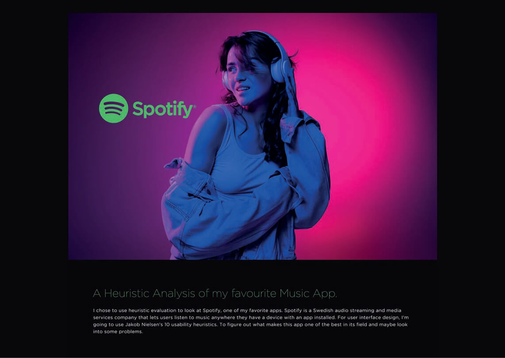
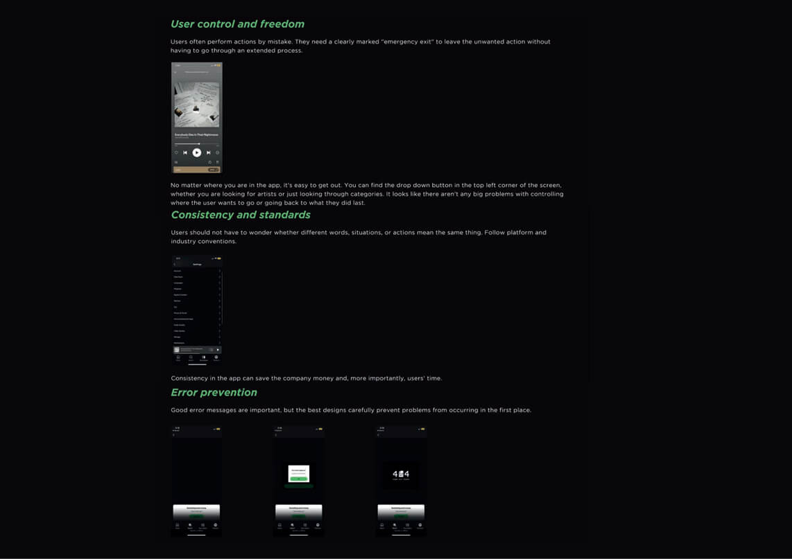
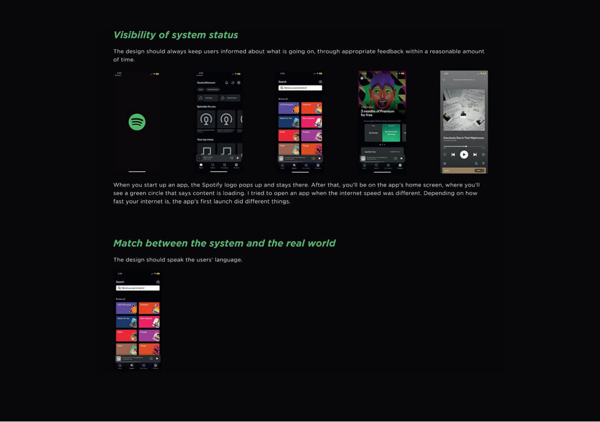
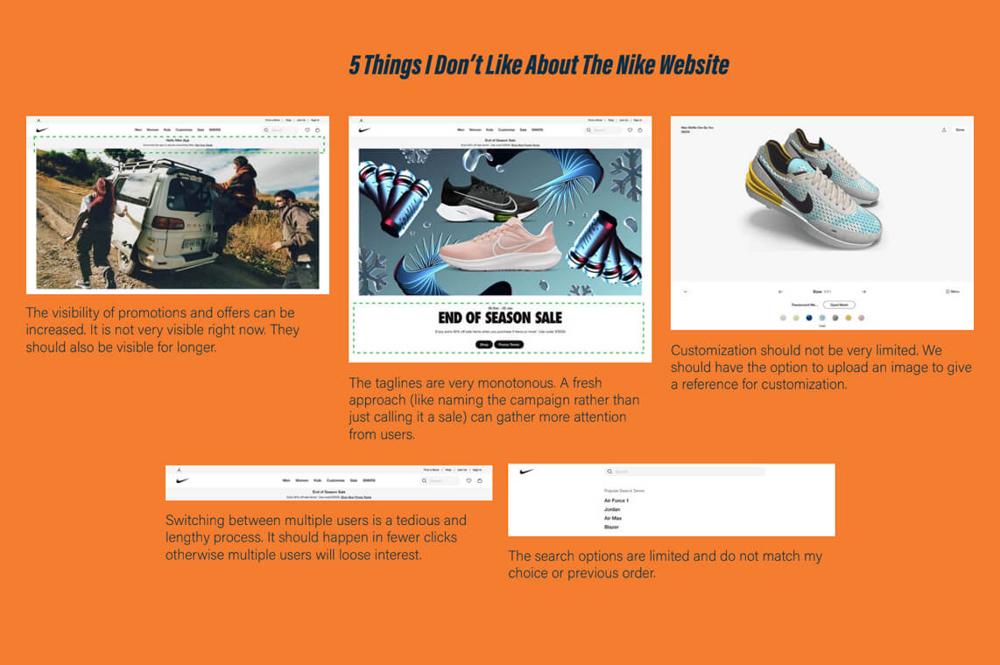
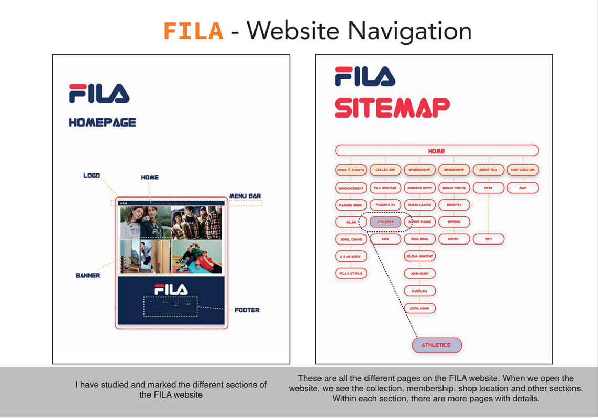
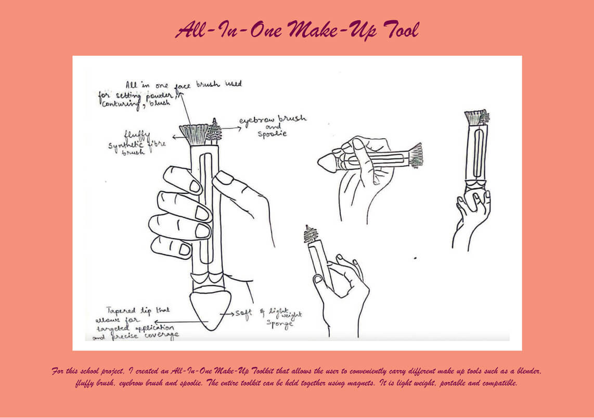
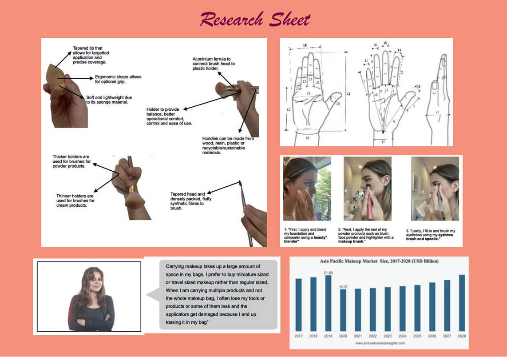
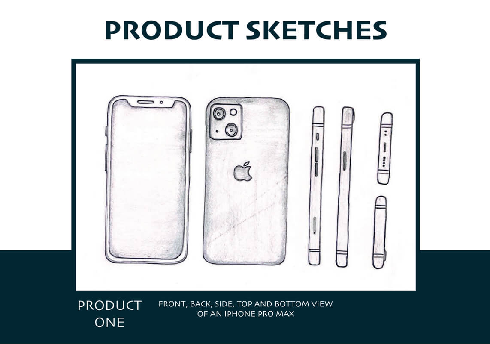
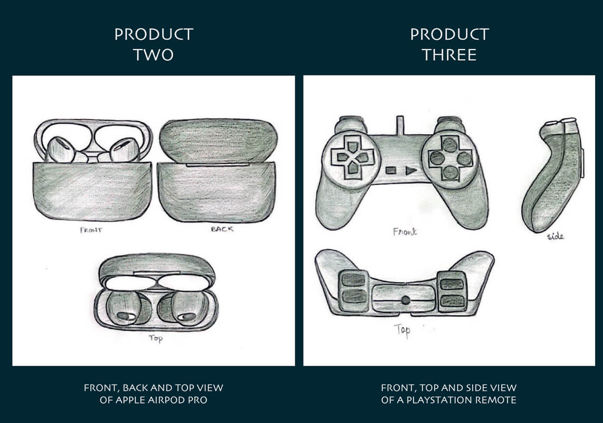
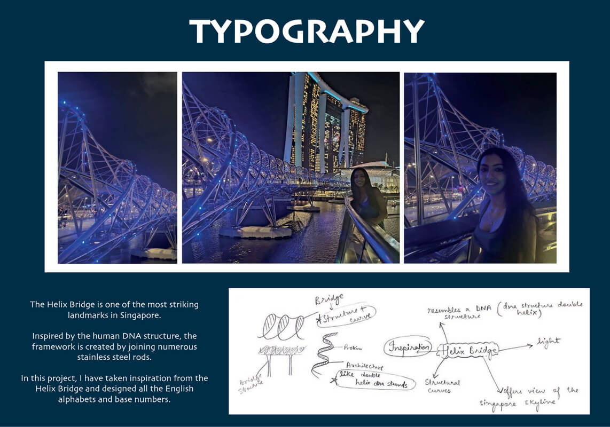
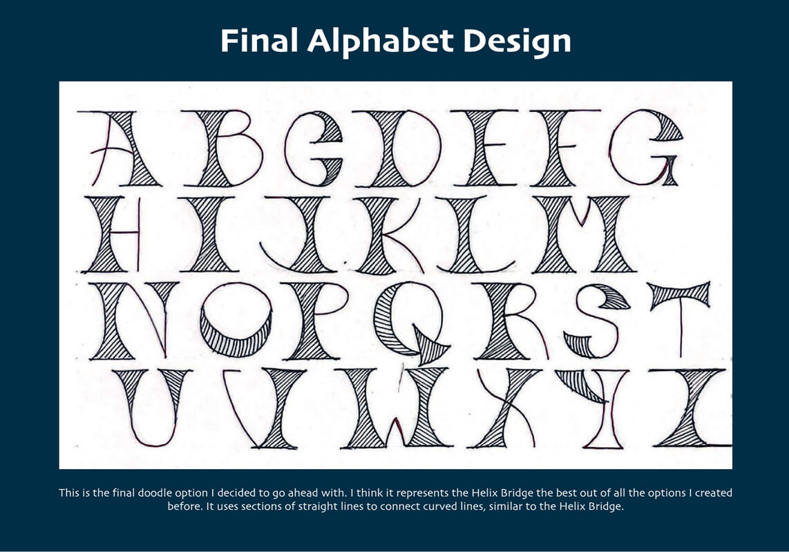